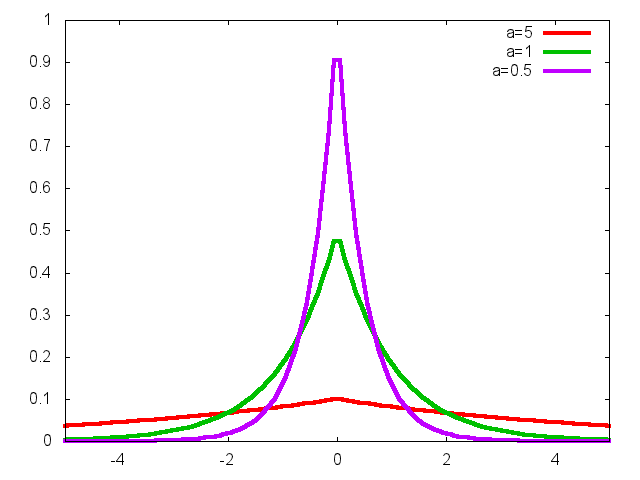
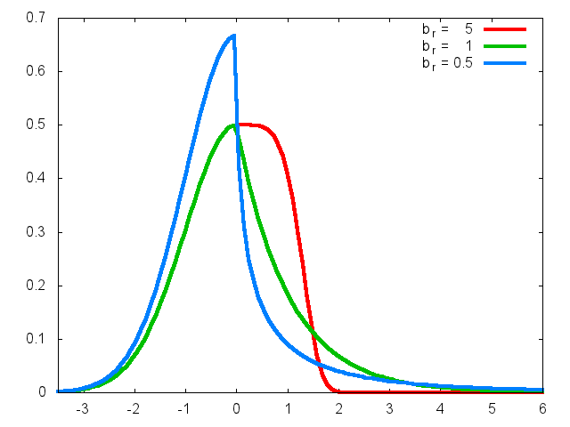
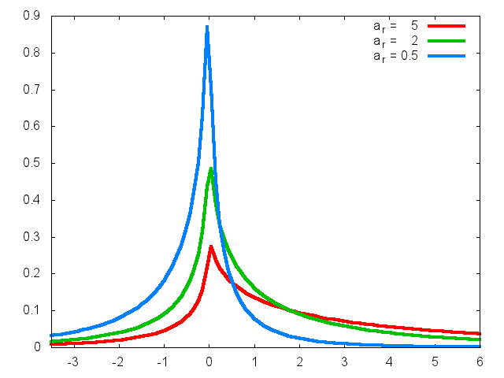

Laplace and Power Exponential estimation
Table of Contents
Overview
The utilities described here address the problem of estimating different families of distributions related to the Laplace and Exponential Power distribution. In the next section a short description of these families is provided. See Available utilities for a list of the programs included in the package.
Distribution families
Three distinct families of distributions are considered: the original Exponential Power, or Subbotin, family, its asymmetric generalization and a "lesser asymmetric" version that results convenient for certain data. The parametrization of the different families is reported below. For further details see the official documentation, also available in PDF format.
Symmetric Power Exponential
This is the original Exponential Power, or Exponential Power (EP), family of distributions which depend on three parameters: the scale parameter \(a\), the shape parameter \(b\) and the position parameter \(m\). The main use of this family is in providing a smooth interpolation between the Gaussian and the Laplacian density. Indeed both these distributions can be seen as special cases of the Exponential Power distribution. In this way by fitting a Exponential Power on a given dataset, one does obtain a descriptive information about the tail behavior (shape parameter) but also derive some inference about the postulated Gaussian or Laplacian behavior of the data. The density reads
\[ f(x;a,b,m) = {1 \over 2 \, a \, b^{1/b} \, \Gamma(1+1/b)}\; e^{-{1 \over b}\, \left|{x-m \over a}\right|^b} \;\;. \]

Figure 1: EP densities with a=1 and different values of b.

Figure 2: EP densities with b=1 and different values of a.
Asymmetric Power Exponential
The Asymmetric Exponential Power (AEP) is a 5-parameter family of densities. In addition to the location parameter m, the left and right parts of the density are independently parametrized by a scale and shape parameter. The density reads
\[ f(x;b_l,b_r,a_l,a_r,m) = \frac{1}{C}\;\; e^{-\left( \frac{1}{b_l}\;\left|\frac{x-m}{a_l}\right|^{b_l}\;\theta(m-x)+ \frac{1}{b_r}\;\left|\frac{x-m}{a_r}\right|^{b_r}\;\theta(x-m) \right)} \]
where \(\theta(x)\) is the Heaviside theta function and \(C\) the normalization constant, \(C = a_l b_l^{1/b_l-1}\Gamma(1/b_l) + a_r b_r^{1/b_r-1}\Gamma(1/b_r)\).

Figure 3: AEP with al=1, bl=2, ar=1 and different values of br.

Figure 4: AEP with al=1, bl=0.5, br=0.5 and different values of ar
These plots are taken from A new class of asymmetric exponential power densities with applications to economics and finance by G. Bottazzi and A. Secchi.
Less Asymmetric Power Exponential
The less asymmetric density is the Asymmetric Power Exponential density, with the two scale parameters set equal, that is \(a_l=a_r\).
\[ f(x;b_l,b_r,a,m) = \frac{1}{C}\;\; e^{-\left( \frac{1}{b_l}\;\left|\frac{x-m}{a}\right|^{b_l}\;\theta(m-x)+ \frac{1}{b_r}\;\left|\frac{x-m}{a}\right|^{b_r}\;\theta(x-m) \right)} \]
the normalization constant now reads \(C = a (b_l^{1/b_l-1}\Gamma(1/b_l) + b_r^{1/b_r-1}\Gamma(1/b_r))\).
Available utilities
The gbtools package includes of the following programs:
- gbepfit
- finds the Exponential Power density that better fit a given set of observations. The observations are considered independently drawn from the same probability distribution and the parameters value are obtained via maximum likelihood estimation.
- gbaepfit
- finds the asymmetric Exponential Power density that better fit a given set of observations. The observations are considered independently drawn from the same probability distribution and the parameters value are obtained via maximum likelihood estimation.
- gblaepfit
- finds the (less) asymmetric Exponential Power density, i.e. an asymmetric density with a symmetric scale parameter, that better fit a given set of observations. The observations are considered independently drawn from the same probability distribution and the parameters value are obtained via maximum likelihood estimation.
- gbepshow
- (since version 6.4) takes a set of observations as input and produces a graphic showing the value of the log-likelihood of this set as a function of the density parameters.
- gbrand
- can be used to generates random variables extracted from a
Exponential Power or Asymmetrci Exponential Power
distribution. See
gbranddocumentation.
These programs have been mainly written to be used from the command line. They read data from file or standard input in an ASCII format and print the result in ASCII format to standard output. The versatile gnuplot program is used as graphic back-end. When the output is intended to be graphically displayed, it has been designed in a format suitable to be sent to gnuplot for plotting.
Documentation
For a description of the method applied and a brief tutorial on the use of the different commands see here. The same instructions are available in a PDF document.
Contributors
Angelo Secchi provided helpful suggestions in the design of programs user interface and he wrote the Cygwin installation instructions.